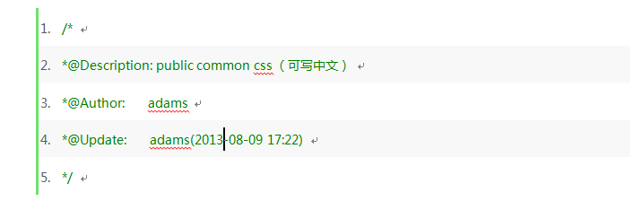
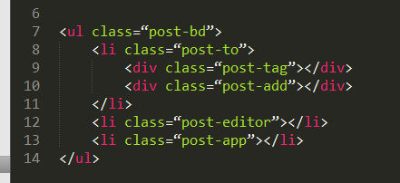
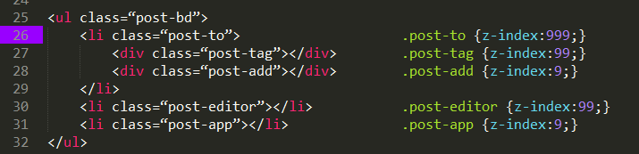
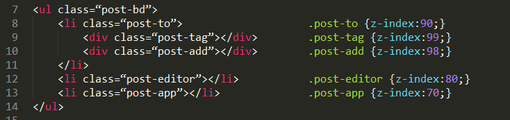

工作内容和意义
1.CSS标签的语义化，命名的统一和
2.css全局reset样式，多多社区的主题样式
3.css3属性的支持，加入高级浏览器自身所带的滤镜效果支持
4.多多sprint的图片的体积优化
5.框架的灵活性和对一点浏览器的友好
6.更多具体、详细内容（请以word详细文档为准）
 文档下载
文档下载
头信息格式如下
注:一般如果项目或页面没有要求description和keywords描述的话,均采用中文站首页的mate信息。
工作内容：1.对登录页的SEO优化，让浏览器通过相关的关键字更容易找到
2.规范html头部，可以适当加入对移动设备的支持，以及WAP页面的支持
什么是DOCTYPE
DOCTYPE是document type(文档类型)的简写，用来说明你用的XHTML或者HTML是什么版本。 其中的DTD(例如xhtml1-transitional.dtd)叫文档类型定义，里面包含了文档的规则，浏览器就根据你定义的DTD来解释你页面的标识，并展现出来。 要建立符合标准的网页，DOCTYPE声明是必不可少的关键组成部分；除非你的XHTML确定了一个正确的DOCTYPE，否则你的标识和CSS都不会生效。 XHTML 1.0 提供了三种DTD声明可供选择：
目前国内页面主要使用gb2312编码，请注意保持CSS文件编码与页面编码一致（不要将CSS文件设置为utf-8等其他编码）。
为了防止文件合并及编码转换时造成问题，建议将样式中文字体名字改成对应的英文名字，如：黑体(SimHei) 宋体(SimSun) 微软雅黑 (Microsoft Yahei，几个单词中间有空格组成的必须加引号)
名字空间(namespace)
通常我们HTML4.0的代码只是
html
，这里的"xmlns"是什么呢？
这个“xmlns”是XHTML namespace的缩写，叫做“名字空间”声明。
XHTML是HTML向XML过渡的标识语言，它需要符合XML文档规则，因此也需要定义名字空间。又因为XHTML1.
0不能自定义标识，所以它的名字空间都相同，就是"http://www.w3.org/1999/xhtml"。
目前阶段我们只要照抄代码就可以了。
定义语言编码
meta http-equiv=“Content-Type” content=“text/html; charset=gb2312”
为了被浏览器正确解释和通过W3C代码校验，所有的XHTML文档都必须声明它们所使用的编码语言，我们一般使用gb2312(简体中文)，制作多国语言页面也有可能用Unicode、ISO-8859-1等，根据你的需要定义。
注：如果忘记了定义语言编码,可能就会出现,你在DW做完一个页面,第二次打开时所有的中文变成了乱码
申明及注释
文件头部必须加上文件申明信息，必须包括文件描述、作者、最后更新(更新人+时间)
命名规范
•采用通俗易懂的英文单词并按内容/功能命名，严禁出现如left、right等方向名词的class/id，严禁出现如xxx1、xxx2等的数字class/id
•除布局、唯一独立模块外建议少用id，必须保证id唯一性
•一律采用小写中划线方式命名，如 xxx-yyy，禁止出现大写字母
•尽可能提高代码模块的复用，复用模块、独立模块可按xxx-mod命名（-mod可不写），mod下面再取xxx-hd（头部）、xxx-bd（内容）、xxx-ft（底部）命名
•常用命名（多记多查英文单词）：page、wrap、layout、header(head)、footer(foot、ft)、content(cont)
、menu、nav、main、submain、sidebar(side)、logo、banner、title(tit)、popo(pop)、icon、note、btn、txt、iblock、window(win)、tips等
z-index
层级(z-index)必须清晰明确，页面弹窗、气泡为最高级（最高级为999，如showWin、pop等），不同弹窗气泡之间可在三位数之间调整；普通区块为10-90内10的倍数；区块展开、弹出为当前父层级上个位增加，禁止层级间盲目攀比,如以下html结构：

不建议的写法

建议写法

更多具体、详细内容（请以word详细文档为准）
文档下载
strong>